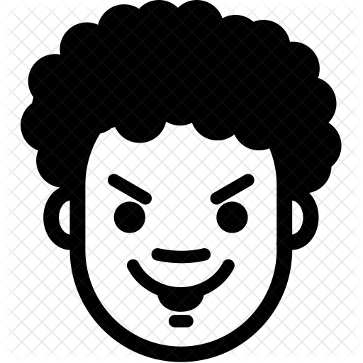

Thiago Cionek powołany do reprezentacji Polski
Thiago Cionek został powołany do reprezentacji Polski na
towarzyski mecz z Czechami i spotkanie Ligi Narodów z Portugalią
- poinformował Polski Związek Piłki Nożnej. Obrońca SPAL otrzymał
powołanie w miejsce kontuzjowanego Kamila Glika.
Kamil Glik nabawił się kontuzji pachwiny we wtorkowym meczu Ligi Mistrzów, w
którym jego AS Monaco przegrało przed własną publicznością z Club Brugge 0:4.
Polski stoper nie zdołał dokończyć spotkania i musiał zejść z boiska w 76. minucie.
Jak poinformował PZPN, Glik i tak stawi się w poniedziałek na zgrupowaniu, ale
selekcjoner Jerzy Brzęczek zdecydował się na powołanie Cionka.
Niemieckie media: karate-gol Lewandowskiego, Bayern może na nim polegać
Reprezentant Polski najpierw wykorzystał rzut karny,
który z resztą sam wywalczył. Eksperci nie do końca
zgadzali się z decyzją sędziego. – Według mnie było to
za mało, by dyktować jedenastkę – komentował ekspert Sky
Lothar Matthaus. Po przerwie Bayern miał miał kolejne okazje,
ale je marnowali. W końcu jednak podwyższyli wynik. Lewandowski
popisał się artystycznym uderzeniem i mecz skończył z dubletem.
Niemieckie media: karate-gol Lewandowskiego, Bayern może na nim polegać
Reprezentant Polski najpierw wykorzystał rzut karny,
który z resztą sam wywalczył. Eksperci nie do końca
zgadzali się z decyzją sędziego. – Według mnie było to
za mało, by dyktować jedenastkę – komentował ekspert Sky
Lothar Matthaus. Po przerwie Bayern miał miał kolejne okazje,
ale je marnowali. W końcu jednak podwyższyli wynik. Lewandowski
popisał się artystycznym uderzeniem i mecz skończył z dubletem.